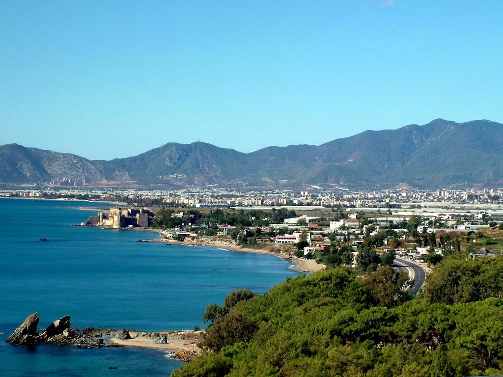

Anamur İlçesi

Anamur, Mersin ilinin batısında yer alan tarihi ve turistik bir ilçedir. Akdeniz kıyısında yer alan bu güzel ilçe, muz bahçeleri ve doğal güzellikleriyle ünlüdür.
Gezilecek Yerler
- Anamurium Antik Kenti: Roma döneminden kalma bu antik kent, bölgenin tarihi zenginliklerinden biridir.
- Mamure Kalesi: Sahil kenarında yer alan ve muhteşem manzarasıyla dikkat çeken tarihi kale.
- Dragon Çayı: Serin suları ve piknik alanlarıyla ünlü doğal bir alan.
Yöresel Lezzetler
Anamur'a özgü lezzetler arasında muz, muz reçeli ve çeşitli deniz ürünleri yer almaktadır.
Ana Sayfaya Dön